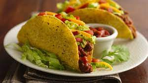

tacos

Here is a recipe to make delicious tacos in less than half an hour! You can adjust the portions to accomodate your needs.Spice up your dinner with your family or friends with a quick and simple recipe!
Ingredient
- ground beef
- Salsa of your choice
- taco shells
- lettuce
- Shredded cheese of your choice
Steps to follow:
- Cook beef on medium heat for around 10 minutes
- Add salsa while cooking the beef for around 5 minutes
- Heat taco shells(follow package instructions)
- Add the ground beef and salsa mixture into a heated taco shell
- Add shredded cheese and lettuce in the taco
- Enjoy with family and friends!